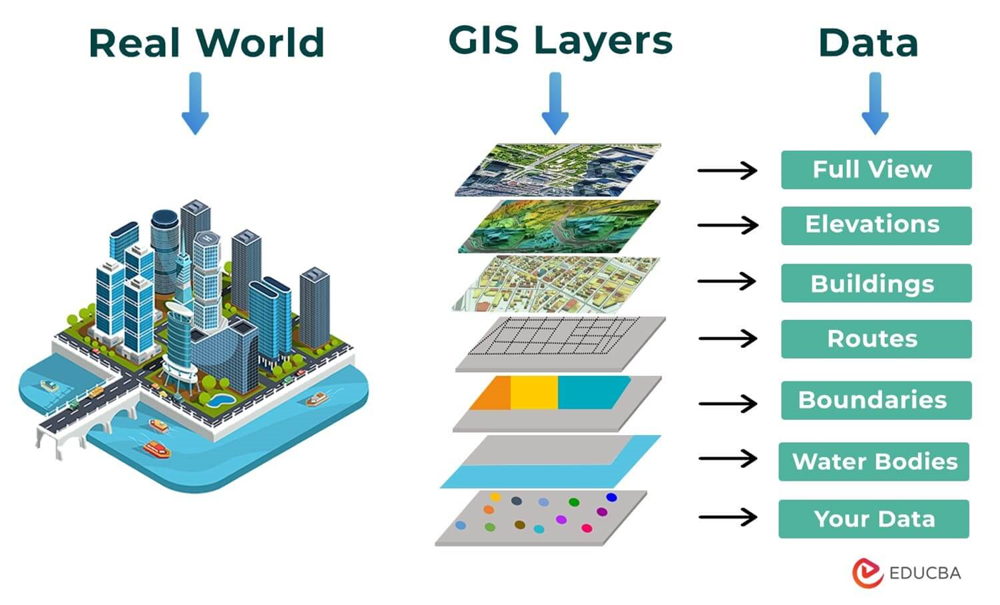

Diagram from stratoflow.com
Diagram from stratoflow.comNote: To navigate to a specific section in the below, please click the Table of Contents located in the right panel under the “On this Page”.
A geographic information system (GIS) lets users visualize, question, analyze, and interpret spatial data to understand relationships, patterns, and trends.
A GIS is a system of computer hardware (computer, phone, tablet, etc.), software (ArcGIS online, ArcGIS Pro, QGIS), data, and personnel for working with infomration to a location.
Diagram from stratoflow.com
You probably already used GIS today!
GIS is a powerful tool!
GIS shows the world as a stack of layers. These can be anything! Each layer represents a specific feature or phenomena, whether it is ice cream stores, political boundaries, air quality, bike lanes, or anything else.

Who isn’t?
Public Health researchers map disease outbreaks, air quality, access to healthcare, and more. Historians rely on maps not just for textbooks, but for interactive exhibits and web maps. Maps of elections, demographic data, conflict zones, crime, crop production, property values, and more are ubiquitous. GIS can be used for disaster response, climate resilience, urban and regional planning, transportation, and the list goes on!
aka spatial data, geospatial data, geodata, shapefiles, geodatabases, location intelligence
This is digital information reference with geographic coordinates. Each piece of information has an associated location in the real world that it refers to!
GIS data can be downloaded in GIS-ready formats from numerous sources, collected in the field, imported from tabular data, or digitized from print maps.
GIS data consists of 2 major types:
 The left side represents vector data
while the right side represents raster data
The left side represents vector data
while the right side represents raster data
Regardless of the format, the data is still a representation of the underlying world!
To Get Support: - Please email DataLab-Support@elist.tufts.edu for all GIS and geospatial help.